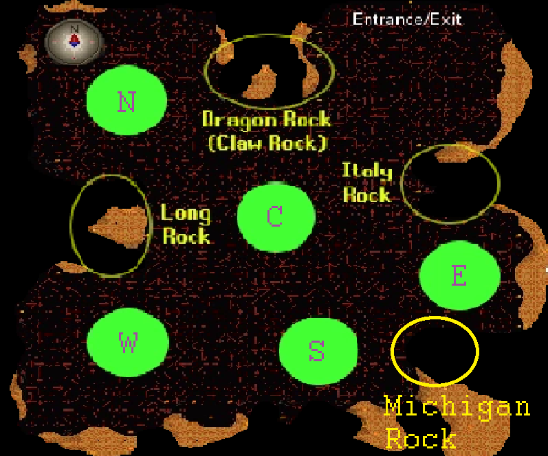

Example Data Entry:
Aberrant Spectres:
Possible?Preference:
Abyssal Demons:
Possible?Preference:
Adamant Dragons:
Possible?Preference:
Ankou:
Possible?Preference:
Information
Slayer Tasks
If you’re reading this page, you probably are already familiar with how slayer works. You go to a slayer master, get assigned monsters to kill, and kill those monsters to get slayer xp.
Slayer is an attractive skill to many players, as it not only breaks up the monotony of normal runescape play, but also offers some of the best combat exp in the game, as well as some enticing rewards, especially for ironmen.
However, sooner or later, you’ll realize that some tasks are better than others. For instance, one universally hated task is Spiritual Creatures. Until you can kill spiritual mages, there is virtually no reason to do these tasks.
Killing Spiritual Creatures is bad because:
- They don’t give good slayer xp/hour.
- They don’t have any good drops (even spiritual mages aren’t that good).
- They aren’t very afk to kill.
- Each task takes a long time, dragging out the pain.
For these reasons, as well as others, Spiritual Creatures have made their way onto virtually everyone’s block list, being the most blocked slayer task as of 2017.
What you will need to do, as someone using this tool, is consider each task you get, and try to rank them mentally. Mostly, as shown above, there are four points on which to judge slayer tasks:
Slayer exp/hr
This is obvious. Especially if you’re an ironman, there’s a high probability that you’re doing slayer to reach a certain level, and so maximizing your exp/hr is important.
Note that this isn’t always uniform across accounts. For instance, if you’re an ironman, and you don’t have easy access to a dwarf multicannon, tasks such as Trolls, Kalphite, and Suqah can become extremely slow.
GP/hour
This too is fairly straightforward. Good rewards can make an otherwise slow and painful task quite worth doing. For instance, Skeletal Wyverns offer abysmal exp/hr, and can be quite annoying due to having to fight for a spot. However, their insanely good drops make up for this in a huge way.
AFK-ability
Tasks that are fairly AFK-able, such as demons, are generally more desirable, as they take less effort. This doesn’t mean everything however, as boss slayer, which is perhaps the opposite of AFK, can be fun, and gives out rewards that make the effort you put in worthwhile.
Time/Variety
As stated above, one of the huge reasons people do slayer is for the variety. Once you’ve killed enough Black Demons, you may never want to see them again, and this is completely valid.
More important than anything else however, is your gut feeling. If you feel like doing Jad slayer is a waste of time, then so be it. Don’t do it. No matter what memes say, the whole reason we play runescape is to have fun.
The only caution I have for you is that you try out tasks yourself. Although people might say that Zygomites are an awful task, you should still do them at least once - you may be surprised.
Slayer Points
Every time you complete a slayer task, you will get a certain number of slayer reward points, depending on your slayer master. You also get bonus points for completing streaks of tasks. So what are they useful for?
Unlocks
Slayer points can be used to unlock extremely good perks or items. One of the first things a lot of people save up for is the slayer helmet - one of the best helmets in the game when on task due to its good defenses and peerless offensive bonuses.
In addition to items, you can also unlock certain tasks, most notably TzHaar, which you can use to give yourself a leg up when doing the fight caves.
Also, you can unlock the chance for a superior slayer monster to appear, which sometimes can drop the rare imbued heart.
Extensions
If you really love a certain slayer task, you can extend it for a one-off fee of slayer points (this is reversible). For instance, a lot of people extend Cave Kraken tasks, so they can spend more time killing the boss for money.
Blocks
For a one-off fee of 100 points, you can permanently block a slayer master from assigning you a certain task. The number of tasks you can block varies with how many quest points you have, and you can unblock tasks at any point if you change your mind. Keep in mind that if you want to change a block, you will need to pay the 100 points again.
Skips
For 30 points, you can skip your current task, and get another one. Note that this doesn't remove the task permanently like blocks, and it also doesn't reset your streak.
How to approach Slayer
The important thing to note about spending slayer points is that they come in two major categories: one-off expenditures and continuous expenses.
You only need to unlock the slayer helmet once. However, it is perhaps the most important thing you can buy with slayer points. Slayer does have quite high barriers to entry, and you might find that you never have enough slayer points, especially when starting out.
Nevertheless, once you’ve unlocked the slayer helmet, slayer rings, and superior monsters, among other things, your need for points will go down. However, as your preferences change, you may quite often need to spend points to change your blocks and extensions (although those will tend to stabilize) and you will always be spending points on skipping tasks, so slayer points always have use.
Therefore, the obvious strategy is to grind out as many slayer points as you can, as early as you can, to get all of the unlocks out of the way. Then, you can focus all of your slayer points on setting up your blocks and skipping tasks. See this page for methods on farming slayer points.
Now that you’ve gotten all of your unlocks out of the way, how do you best use your points? A lot of people, not quite knowing what to do, save up enormous amounts of points, which is frankly a huge waste.
Imagine if you spent even a fraction of those points skipping the more annoying tasks - how much more fun you would be having.
The Tool
The key insight is that you have income of slayer points, and expenditures, and you want these two to be balanced in the long run. You don’t want to be constantly hovering at 0 slayer points, waiting to get a lucky streak of tasks, and you don’t want to pile them up and not do anything with them.
Here’s where my tool comes in. My tool assumes that you’ve already purchased all of the one-off content, and all that’s left is to use slayer points on skipping and blocking tasks. Changing extensions and unlocks is up to personal taste, so that’s outside the purview of this tool.
Given this state, and a general set of preferences, my tool will tell you two pieces of information:
- The ideal tasks to block, given your set of preferences.
- The ideal way to skip tasks to make sure that you stay even on points in the long run.
Although it may seem like the tasks you should block are just your least favorites, this isn’t quite the case. For instance, say you had exactly one slayer block, and you had to decide how to use it. For the sake of argument, you use Duradel as a slayer master, and among all the tasks, you absolutely despise waterfiend tasks, hate boss tasks, and medium-hate Abyssal Demon tasks.
Although your first instinct may be to block waterfiends, an important piece of information is that waterfiends are tied for the least common slayer tasks to be given, and Abyssal Demons are tied with boss tasks for the most common (almost 6x as likely as waterfiends). So, instead of blocking waterfiends, you should block Abyssal Demons or bosses, and use the skip feature to skip past the occasional waterfiend task.
However, you can also block bosses for free, by simply un-unlocking them at a slayer master. This effectively works as a free block, allowing you to use your block for Abyssal Demons.
My tool takes all the hard work out of this by mathematically calculating what the best set of blocks/skips are, based on your preferences. All you need to provide is information about your slayer level, combat level, and how much you like each task.
Keep in mind that my tool does NOT take into account the following factors:
Change of preferences
As you slay, you will obviously have changes in your taste. Maybe you just get tired of having the same tasks all the time, and want to change things up a bit.
In this case, come back to the tool and use an updated list of preferences to get your new optimal setup.
Leveling Up
As you level up your combat level/slayer level, the pool of tasks that you can get, as well as the slayer master you can go to, changes. Once again, you must come back and enter your preferences again to get a new ideal set of blocks/skips.
The tool has an import/export feature, which you can use to save your preferences for a later date. For instance, if you didn’t really change your preferences all that much, but unlocked Skeletal Wyverns, you could come back, import your old data, change your level, and just input one new number for the Skeletal Wyverns.
If you want to know the nitty-gritty on how the tool works, please check it out here, but otherwise, go ahead and enjoy the tool!